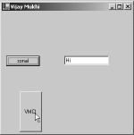

3. WinForms
The Visual Basic.Net compiler
has a large number of options, one of which is the /target option, which
determines how the output should appear. Under Windows, a dll file and an exe
are both similar. The only apparent distinction between the two is that an exe
file can be executed at the command prompt, whereas, a dll cannot. It acts as a
carrier or a reservoir of code. By default, the target output is set to exe.
Now, create the following file called b.vb:
b.vb
public class yyy
sub abc
System.Console.WriteLine("abc")
end sub
end class
The file b.vb is composed into a
dll file, instead of an exe file. To achieve this, the following command is
used:
>vbc /target:library b.vb
The above command creates a file
called b.dll, which carries the code of the class yyy, containing a sub called
abc. The word 'public' mentioned before the name of the class signifies that
the entire world has access to the code in the class. Words such as 'public'
are called access modifiers, which we shall address in a subsequent section. If
we eliminate the 'public' access modifier, the next program would not work
successfully.
a.vb
Public Class zzz
Shared Sub Main()
dim a as yyy
a = new yyy
a.abc
End Sub
End Class
>vbc a.vb /r:b.dll
Output
abc
One of the most vital advantages
of writing code is that the other programmers too can access it. For example,
the file b.dll carries a class yyy, which can contain numerous functions like
abc. Now, any other program can also refer to this code.
On running the Visual Basic.Net
compiler at this stage, an error will be reported, since the compiler is
unaware of the identity of the file that contains the code. Thus, we need to
explicitly inform the compiler about the identity of the dll file that contains
the function.
This is achieved by specifying
the command line option /R, where the R stands for 'reference'. It is followed
by the name of the dll that contains the code. Microsoft also offers its own
set of classes by locating them in multiple dll files. Hence, to access the
code contained in them, we need to use the /R option at the compiler level.
This chapter is primarily
focused on building GUI applications. In the Visual Basic.Net program
stipulated below, the class zzz is derived from the class Form. This implies
that all the code in the class Form is now made available in the class zzz.
a.vb
Imports System.Windows.Forms
Public Class zzz
Inherits Form
Shared Sub Main()
dim a as zzz
a = new zzz()
Application.Run(a)
End Sub
End Class
>vbc a.vb /r:System.Windows.Forms.dll /r:System.dll
|
|
|
Screen 3.1 |

On running the above program,
general happiness prevails, since a pretty little window comes into view, as
shown in screen 3.1.
Since the class zzz is derived
from the Form class, all methods and instance variables within the Form class,
are now made available in zzz. This establishes the potency and beauty of the
concept of inheritance.
The Form class belongs to the
namespace of System.Windows.Forms. This explains the presence of the 'imports'
statement, which is provided with the primary aim of evading the use of the
entire namespace before Form, since the class is used very often.
All classes in the .Net world
must belong to a namespace. If we do not specify a namespace for a class, it
will get placed in the global namespace.
In the Main function, first an
object of type zzz is created. It is then passed as a parameter to the Run
function. Abiding by what we have learnt so far, we can safely conclude that
Application is the name of the class, and Run is a shared function. The
Application class also falls under the namespace of System.Windows.Forms.
The final action to be taken is
to furnish the Visual Basic.Net compiler with a reference to the dll,
which contains the code of the Forms
and Application classes. The help text on the above-mentioned classes clearly
reveals that the dll that constitutes the System.Windows.Namespace, is the
System.Windows.Forms dll. This name is passed on to the Visual Basic.Net compiler
using the /R option.
The Run function merely requires
an object derived from Form. Once it gets the custody of this object, it
displays a cool looking window. Never mind how or why!
a.vb
Class zzz
Shared Sub Main
dim a as yyy
a = new yyy
a.i = 10
a.abc
a.pqr
End Sub
End Class
Class yyy
Inherits xxx
sub abc
System.Console.WriteLine("yyy abc {0}" , i)
i = 30
end sub
end class
Class xxx
public dim i as integer
sub pqr
System.Console.WriteLine("xxx pqr {0}", i)
end sub
end class
Output
yyy abc 10
xxx pqr 30
The above program demonstrates a
simple concept. The class xxx has a public instance variable i. Thus, other
classes can now access this variable. The class yyy is derived from the xxx
class, with 'a' as its object. Now, 'a' is allowed access to the variable i.
The golden rule here is that,
whatever an object of class xxx is allowed to do with the members of the class
xxx, the same leeway is granted to an object of the class derived from xxx.
Furthermore, there is only one copy of the variable i. So, any changes made to
it from the sub abc, would be reflected in the sub pqr within the class xxx.
The next program converges
around this concept.
a.vb
Imports System.Windows.Forms
Public Class zzz
Inherits Form
Shared Sub Main()
dim a as zzz
a = new zzz()
Application.Run(a)
End Sub
sub new
myBase.New
Me.Text = "Vijay Mukhi"
end sub
End Class
|
|
|
Screen 3.2 |
The above program displays a
window, as seen in screen 3.2, where the title of the window is given as
"Vijay Mukhi".
The program has a constructor
'new', which traditionally calls the original constructor. This is not
mandatory, but we would rather follow the rules laid down by the Big Daddy!
Then, using the keyword 'Me', the variable Text is initialised to "Vijay
Mukhi". The Text member is not created anywhere in the class. So, it is
safe for us to assume that it exists in the class Form.
This initialisation results in a
change in the title of the window. The Run function determines the title of the
window, after ascertaining the contents of the Text variable. The default is a
blank value. We are still at the preliminary stage of customizing the Windows
Forms.
a.vb
Imports System.Windows.Forms
Imports System.Drawing
Public Class zzz
Inherits Form
Dim b as Button
Shared Sub Main()
dim a as zzz
a = new zzz()
Application.Run(a)
End Sub
sub new
myBase.New
Me.Text = "Vijay Mukhi"
b = new Button
b.Text = " sonal"
dim p as Point
p = new Point(10,100)
b.Location = p
Dim c as Control.ControlCollection
c = Controls
c.Add(b)
end sub
End Class
>vbc a.vb /r:System.Windows.Forms.dll /r:System.dll
/r:System.Drawing.dll
This example displays a button
with the name "sonal" in it, as shown in screen 3.3.
|
|
|
Screen 3.3 |
We initiate the above example by
creating an object 'b', whose type is Button, and which resides in the System.Windows.Forms
namespace.
The class contains code and
instance variables that are conversant with the role of a button.When the Text
property of the Button object 'b' is set to some text such as
"sonal", this text gets displayed on the Button.
Now, to place the button at a
specific position on our screen, the Point class is used, whose two members
represent a Point on the graphics screen. These two members x and y are
initialised to the values 10 and 100, respectively, through the Point constructor.
The Point class is in the System.Drawing namespace. Therefore, during
compilation, the reference of /r is set to the file System.Drawing.dll.
The Location property of the
Button object is then initialised to this freshly created Point object p. The
most pertinent action at this stage is to inform the Form class that a Control
is being added to the Form.
The Form class has a property
called Controls, whose type is Control.ControlCollection. This property keeps
track of all the controls that are placed on the form.
So, by using the Add function in
the Control.ControlCollection, we can add the button control to the Collection
object, thereby displaying the button on the form. This is how we add a Button
Control to our form.
a.vb
Imports System.Windows.Forms
Imports System.Drawing
Public Class zzz
Inherits Form
Dim b,b1 as Button
Dim t as TextBox
Shared Sub Main()
dim a as zzz
a = new zzz()
Application.Run(a)
End Sub
sub new
myBase.New
Me.Text = "Vijay Mukhi"
b = new Button
b.Text = "sonal"
dim p as Point
p = new Point(10,100)
b.Location = p
b1 = new Button
b1.Text = "VMCI"
p = new Point(40,180)
b1.Location = p
Dim s as Size
s = new Size(50,90)
b1.Size = s
t = new TextBox
t.Text = "Hi"
p = new Point(140,100)
t.Location = p
Dim c as Control.ControlCollection
c = Controls
c.Add(b)
c.Add(t)
c.Add(b1)
end sub
End Class
This example culminates in the
creation of a window with two buttons,
one larger than the other and a textbox containing the value "hi".
This is shown in screen 3.4
|
 |
|
Screen 3.4 |
One more button is added to the
form in the same manner as before. Thereafter, the new instance of the button
b1 is provided with a Size object. The Size class comprises of the width and
height members, which are to be initialised using the constructor. The Size
property of the Button class determines the size of the control. In case the
dimensions are not mentioned, the default values are taken, as seen in the case
of the Button b.
The TextBox class is used to
place a TextBox control on the form. Here also, the Text property determines
the contents that are to be displayed with the TextBox. Everything else remains
just the same.
This example illustrates how
multiple controls can be placed on a single form. The only impediment here is
that, each time that the Control is to be added to the form, the services of
the Add function have to be exploited. So, if there are 100 controls to be
placed on the form, the Add function will be executed a 100 times! Let us
simplify this process by introducing the concept of Arrays.
a.vb
Public Class zzz
Shared Sub Main()
dim a(2) as integer
a(0) = 1
a(1) = 10
a(2) = 40
System.Console.WriteLine("{0} {1} {2}", a(0), a(1),
a(2))
end sub
End Class
Output
1 10 40
An array is a variable with a
single name, but is equipped to hold multiple values. The above DIM statement
of "a(2) as integer" creates three variables named a(0), a(1) and
a(2). Thus, in a single stroke, multiple variables have been created. These
variables conduct themselves in a manner similar to the normal variables. At
this stage, the only difference that you need to take heed of is, that this
type of variable has a pair of open-close brackets following it.
a.vb
Public Class zzz
Shared Sub Main()
dim a(2) as integer
dim i as integer
i = 0
a(i) = 1
i = 2
a(i) = 10
i = 1
a(i) = 100
System.Console.WriteLine("{0} {1} {2}", a(0) , a(i) ,
a(2))
end sub
End Class
Output
1 100 10
The above example showcases the
most valuable facet of an array.
First, we create an array of
size 3, followed by an integer variable i, which is initialised to a value of
0. Earlier, we had specified a number in round brackets, but here, we specify
the variable i instead. Thus, the line a(i) = 1 will evaluate to a(0) = 1,
since the variable i has a value of 0. On the next line, we change the value of
the variable i to 2. Therefore, the statement a(i) = 10 evaluates to a(2) = 10.
The variable a(1) is initialised in a similar manner.
Hence, in the above example, the
value of the variable i determines the name of the variable. To display the
value of the array variables, similar rules apply. The use of variables in lieu
of constant numbers assists in making the code more generic.
Loops
a.vb
Public Class zzz
Shared Sub Main()
dim i as integer
i = 1
Do while i <= 5
System.Console.Write("{0} " , i)
loop
end sub
End Class
If you run the above program, it
would continue to execute till eternity. So, hold on! Let us appreciate the
code first.
We first create an integer
variable i, and set its value to 1. Then, we come across a 'Do while' statement
containing the condition i <= 5. The 'Do while' statement, including the
condition and the loop, are part and parcel of the looping construct. A loop
construct is pressed into action when the same code needs to be repeated
multiple times.
The condition i <= 5 will
evaluate the value of i. Since it is 1, the condition evaluates to 1<=5,
which is True. Since the condition results in True, all code enclosed within
the 'Do while' and the loop, gets
executed. Presently, it contains only a Write function, which is very similar
to the WriteLine function, except for the 'return' at the end. This Write
function displays the value of the variable i.
On encountering the loop
statement, the control in code execution loops back to the 'Do while'
statement, where the condition is checked again. Since the value of i is still
1, the condition results in True, thereby executing the Write Function and the
loop.
The loop again takes the control
back to the 'Do While' statement, and the whole process iterates itself. This
action will keep repeating itself till eternity, since the condition after the
'Do While' never becomes False. Thus, we are trapped in an incessant loop.
Press Ctrl C to terminate the loop.
a.vb
Public Class zzz
Shared Sub Main()
dim i as integer
i = 1
Do while i <= 5
System.Console.Write("{0} " , i)
i = i + 1
loop
System.Console.Write("..{0} " , i)
end sub
End Class
Output
1 2 3 4 5 ..6
In this program, only one
additional line has been added to the earlier program. This line enhances the
value of the variable i by 1. This amendment results in printing the numbers
from 1 to 5.
This is because, when the value
of the variable i is 1, the condition becomes 1<= 5, which evaluates to
True, and the value of i is printed, using the Write function.
Then, the value is incremented
by 1, making it 2. The condition that is now checked is 2<=5. This too
results in True and the process is reiterated. However, when the value of i
reaches 6, the condition evaluates to 6<=5. The outcome of this is False and
the loop terminates. The control is now passed to the next statement after
loop. The value of i that is 6, is now printed with two dots preceding it. A loop construct is implemented when code
has to be executed repetitively.
a.vb
Public Class zzz
Shared Sub Main()
dim i as integer
i = 1
while i <= 5
System.Console.Write("{0} " , i)
i = i + 1
End while
System.Console.Write(".{0} " , i)
end sub
End Class
Output
1 2 3 4 5 .6
The output of the two programs
remains almost identical, except that the double dots are replaced by a single
dot. This is a sure indication of why programming languages exasperate us! In
place of the 'Do While' loop, we now have the 'While End While' loop. This
amendment in the syntax however does not translate into any change in the
output.
Thus, it is entirely your
decision to use either a 'While End While' or a 'Do While' loop. There are
myriad ways of achieving the same result. However, we would advise you to stick
to just one loop construct under all circumstances.
a.vb
Public Class zzz
Shared Sub Main()
dim i as integer
i = 100
for i = 1 to 5
System.Console.Write("{0} " , i)
next
System.Console.Write(".{0} " , i)
end sub
End Class
Output
1 2 3 4 5 .6
One more variation of the loop
construct is the For Next loop. Here, a variable has to be created, so that it
can be used as a counter. We have created an integer variable i and initialised
it to 100. The next line has the 'for' syntax, "for i = 1 to 5".
Despite the variable being
initialised to 100, the 'for statement resets its value to 1. Since the value
of i falls within the range of 1 to 5, all the code until the Next statement is
executed.
The 'Next' statement is like the
loop statement. It moves the control back to the top of the 'for' loop, but
only after incrementing the value of the counter by 1. The code from the 'for'
upto the 'next' is then executed once again. This process is repeated until the
value of the variable i reaches 6. As soon as i falls out of range, the line
that immediately succeeds the 'for- next' statement, is executed.
The variable i is not required
to be initialised, since the 'for' statement resets its value in any case.
You are bound to feel perplexed
while determining the loop construct to be implemented. You may adopt our
methodology wherein, on Mondays, Wednesdays and Fridays, we use the 'While'
construct, and on Tuesdays, Thursdays and Saturdays, we use the 'For'
construct. Sunday being a rest day, we desist from writing any code. ;-)
a.vb
Public Class zzz
Shared Sub Main()
dim i as integer
dim b(3) as integer
for i = 0 to 3
b(i) = i*10
next
for i = 0 to 3
System.Console.Write(".{0} " , b(i))
next
end sub
End Class
Output
.0 .10 .20 .30
The above example amply
demonstrates how arrays work seamlessly with Loop Constructs. We create an
array 'b' of 4 integers and 1 integer variable named i. In the 'for' statement,
i will have values ranging from 0 to 3.
In the first round, when the
value of the variable i is 0, the name of the variable becomes b(0) and its
value becomes 0*10 = 0. Then, when the value of the variable i becomes 1, the
name of the variable becomes b(1), and its value becomes 1*10 = 10. In this manner,
all the members of the array are initialised to values that are multiplication
factors of 10.
The second 'for' loop is used to
display the values of all the members of the array. This is achieved by using
the Write function. Thus, arrays and the loop mechanism go hand-in-glove. The
combination has been employed extensively in this book. Its use has also been
witnessed in many of the other programming languages.
a.vb
Public Class zzz
Shared Sub Main()
dim i as integer
dim b() as integer = {1,20,40 , 100}
for i = 0 to 3
System.Console.Write(".{0} " , b(i))
next
end sub
End Class
Output
.1 .20 .40 .100
Short forms may be considered as
a bane or a boon. In the above example, we have demonstrated how arrays can be
created and initialised simultaneously.
Using the = sign with DIM,
different array values can be assigned to the members of the array, by placing
the values in a pair of curly brackets {}. The 'for' loop confirms these values
in the array. We could have easily shirked from explaining this concept, but we
thought it prudent to deal with it, since this concept has been encountered on
numerous occasions in various Visual Basic.Net programs.
Failures are considered to be
stepping-stones to success. In the same vein, errors in programming languages
are believed to make a programmer a lot wiser. Therefore, we have sprinkled
this book generously with many of these error messages. Also, in a programming
language, every rule that is not abided by, generates a corresponding error
message.
For example, if we change the
array initialising line to the following:
dim b(3) as integer = {1,20,40 , 100}
the error that is generated is :
Error
c:\il\a.vb(4) : error BC30672: Explicit initialization is not
permitted for arrays declared with explicit bounds.
At the first glance, you may be
astounded by the error message, because so far, we have merely created an array
of 4 variables and initialized each of these array members. However,
programming languages in a sense may be compared to the human behavior,
especially when it comes to being extremely moody and whimsical.
In the Visual Basic.Net
language, it is very clearly stated that when an array is initialised at the
time of creation, the size must not be specified, even though it may be known
in advance. The compiler is of the opinion that we are encroaching on its
prerogative of determining the size of the array. On various occasions, you
will realize that a large number of rules stipulated by the compiler, have
become rigid and redundant. Welcome to the real world !
However, some errors do manage
to dodge detection. Thus, even if the program compiles normally, there is
always a possibility of encountering errors on running the program.
Rectify the above error and
change the 'for' loop to the following:
for i = 0 to 4
By increasing the range from 3
to 4, one more array member can now be accessed. However, the array extends
only from b(0) to b(3).
While the process of scanning
the code is on, the compiler is unable to detect such programming errors.
Therefore, it compiles successfully. However, it is during the execution when
the program tries to access b(4); in other words, when it goes beyond the
bounds of the array, the following exception is thrown:
Unhandled Exception: System.IndexOutOfRangeException: Index
was outside the bounds of the array.
Thus, an exception is an error
that the compiler fails to detect. It occurs only at run time. This is an ample
proof of the fact that, you can never be absolutely positive about whether your
program will run error-free or not, despite having compiled successfully.
a.vb
Public Class zzz
Shared Sub Main()
dim a as aaa
dim b as bbb
a = b
end sub
End Class
class aaa
end class
class bbb
end class
Error
c:\il\a.vb(5) : error BC30311: Value of type 'bbb' cannot be
converted to 'aaa'.
There are great many people in
this world, who are very selective about the people that they associate
themselves with. In all probability, they would have picked up this trait from
programming languages like Visual Basic.Net. ;-)
Both, an 'integer' as well as a
'string', are classes that the Visual Basic.Net complier understands
intrinsically. But, when we create two classes aaa and bbb, they are considered
external entities, since Visual Basic.Net is not clued-up about them.
Therefore, the classes have been created explicitly in the program. Now, when
we try to equate one with the other, we get an error.
The fundamental rule in all
modern programming languages is that, we cannot equate two variables or objects
with each other, unless they belong to the same class, or are of the same data
type. Therefore, an object of class aaa cannot be equated to an object of class
bbb, even though the contents of both may be the same.
a.vb
Public Class zzz
Shared Sub Main()
dim a as aaa
dim b as bbb
a = b
end sub
End Class
class aaa
end class
class bbb
inherits aaa
end class
However, there are always a few
exceptions to every rule. Two different objects can be equated to each other,
provided one derives from the other. Therefore, the only modification that we
have introduced in the above program is that, we have derived the class bbb
from the class aaa. The class bbb now comprises of both aaa and bbb.
The amended rule now reads as
follows: Two different classes can be equated, provided the class on the right
of the 'equal to' sign is a derived class, and the one on the left is the base
class. This is permissible since a derived class contains the base class. This
rule applies wherever a data type is expected, such as, the parameters to a
function, etc. The same rule applies to the members of an array also.
a.vb
Public Class zzz
Shared Sub Main()
dim b(2) as aaa
b(0) = new aaa
b(1) = new bbb
b(2) = new ccc
end sub
End Class
class aaa
end class
class bbb
inherits aaa
end class
class ccc
inherits bbb
end class
In this program, three classes
are created. The class aaa is an independent entity, which does not derive from
any class. The class bbb derives from the class aaa. Finally, the class ccc
derives from the class bbb.
Thus, the class ccc comprises of
classes aaa and bbb, whereas, the class bbb encompasses the class aaa.
Thereafter, an array 'b', of type aaa and size 3, is created.
The member b(0) is initialised
to an aaa object. The array member b(1) is set to a bbb type, and b(2) is
equated to a ccc object. None of the above generates an error, since we can
equate a base class to a derived class, bearing the following rule in mind
that, the object on the right should be larger than the one on the left.
a.vb
Imports System.Windows.Forms
Imports System.Drawing
Public Class zzz
Inherits Form
Dim b,b1 as Button
Dim t as TextBox
Shared Sub Main()
dim a as zzz
a = new zzz()
Application.Run(a)
End Sub
sub new
myBase.New
Me.Text = "Vijay Mukhi"
b = new Button
b.Text = "sonal"
dim p as Point
p = new Point(10,100)
b.Location = p
b1 = new Button
b1.Text = "VMCI"
p = new Point(40,180)
b1.Location = p
Dim s as Size
s = new Size(50,90)
b1.Size = s
t = new TextBox
t.Text = "Hi"
p = new Point(140,100)
t.Location = p
Dim c as Control.ControlCollection
c = Controls
Dim a() as Control = {b,b1,t}
c.AddRange(a)
end sub
End Class
We took a small detour into
certain aspects of the language to simplify the explanation of the above
example. In order to add controls to the form, the Add function from the
Controls collection, was called multiple times. It is easy to desist from this
repetition by using the AddRange function, which accepts an array of Control
objects as a parameter.
So, after creating the
individual controls and setting their properties, we then create an array 'a'
of type Control. The array is initialised to the three control objects at the
time of declaration itself. The values assigned are the two Button types b and
b1 and the TextBox t.
You should be well apprised of
the fact that the array type is Control, and the array members are of type
Button and TextBox. The compiler does not gripe at this approach, since the
Button and TextBox classes are derived from the class Control, thereby making
Control as the base class. Now, when we run the program, the controls get
displayed on the Form Window.
The next step is to activate
some code when the button is clicked upon.
To implement this, we again need to take a break away from the regular
routines, and fathom out the language a little further.
Event Handling
a.vb
Public Class zzz
WithEvents b as yyy
Shared Sub Main()
dim a as zzz
a = new zzz
End Sub
sub new
b = New yyy()
b.pqr
b.abc()
end sub
Sub vijay() Handles b.e
System.Console.WriteLine("Hi")
End Sub
End Class
public class yyy
Event e()
Sub abc()
RaiseEvent e
End Sub
Sub pqr()
System.Console.WriteLine("pqr")
End Sub
end class
Output
pqr
Hi
Let us examine the above program
in small parts.
The class yyy has an entity
called 'e', which is neither a variable nor an object, but an event. The 'event'
keyword is understood intrinsically by Visual Basic.Net.
The entity 'b' is of type yyy,
but since it has the WithEvents keyword associated with it, the class will be
used solely to handle events. We are fully aware that the concept of events has
not been clarified so far.
To initialise the event object
'b', the zzz object has to be created, since it is the constructor or the sub
'new' of zzz, that actually instantiates it. Then, using b, the two functions
pqr and abc are called off the yyy object. At this point in time, the
WithEvents keyword does not prohibit the yyy type from calling the sub pqr and
abc.
The WithEvents keyword aids in
working with events, but b will always remain a yyy object. Thus, this keyword
augments the existing features of the object.
In the function abc, there is a
statement RaiseEvent within which, the name of the event has been specified. As
always, the round brackets placed after the event name, are optional.
This statement performs a
considerable amount of work. It checks for functions in class zzz. These
functions contain the word 'Handles', followed by the object name 'b', and
finally, followed by the event 'e'. It only looks at functions in zzz, because
the function abc has been called from this class.
The function 'vijay' satisfies
both these criteria:
It contains the Handles keyword and
the object name 'b'
It also comprises of the name of the
event 'e', which is raised by RaiseEvent.
Just about anything can trigger
off an event, such as a mouse-click, or a key press on the keyboard, or the
shutting of a window.
Here, the event is set by
calling the function abc. The function
calls RaiseEvent, which calls all functions from the class zzz handling this
event object combination. There can be innumerable such functions, which the
event in class yyy is simply unaware of.
a.vb
Public Class zzz
WithEvents b as yyy
Shared Sub Main()
dim a as zzz
a = new zzz
End Sub
sub new
b = New yyy()
b.pqr
b.abc()
end sub
Sub vijay() Handles b.e
System.Console.WriteLine("Hi")
End Sub
Sub mukhi() Handles b.e
System.Console.WriteLine("Hi1")
End Sub
End Class
public class yyy
Event e()
Sub abc()
RaiseEvent e
End Sub
Sub pqr()
System.Console.WriteLine("pqr")
End Sub
end class
Output
pqr
Hi1
Hi
In the above example, the class
zzz has two functions, viz. vijay and mukhi, both of which can handle the event
'e' using the object 'b'. So, when the event 'e' is raised, both the functions
vijay and mukhi get called one after the other. This proves that when the
function abc is called, some code will get triggered off in the class zzz.
a.vb
Public Class zzz
WithEvents b as yyy
WithEvents c as yyy
DIM d as yyy
Shared Sub Main()
dim a as zzz
a = new zzz
End Sub
sub new
b = New yyy()
b.abc()
c = new yyy
System.Console.WriteLine("New Object")
c.abc
d = new yyy
System.Console.WriteLine("New Object1")
d.abc
end sub
Sub vijay() Handles b.e , c.e
System.Console.WriteLine("vijay")
End Sub
Sub mukhi() Handles b.e, c.f, b.f, c.e
System.Console.WriteLine("mukhi")
End Sub
Sub sonal() Handles c.f
System.Console.WriteLine("sonal")
End Sub
End Class
public class yyy
Event e()
Event f
Sub abc()
RaiseEvent e
System.Console.WriteLine("Event")
RaiseEvent f
End Sub
end class
Output
mukhi
vijay
Event
mukhi
New Object
mukhi
vijay
Event
sonal
mukhi
New Object1
Event
The above program is mammoth in
size. So, let us address it in small parts. We have three yyy objects named b,
c and d. Since the WithEvents clause has been used only for the b and c
objects, the d object cannot be used for event handling. As was done in the
earlier program, we create a new yyy object and call the abc function.
In the abc function, we first
raise the event 'e'. On doing so, the Visual Basic.Net system will check all
the functions that handle the event object b.e. Two functions named vijay and
mukhi, which handle this object event, get called. A point to be noted here is
that a sub can handle as many object event combos as is desired. Then, the
Event string is displayed.
Thereafter, another event f is
raised. The system now searches all the functions for the combination of b and
f. The only match found is the function mukhi.
Object c is then initialized to
new yyy and the Write function displays the string New Object.
Now, function abc is called,
using the object c. So, the raise event will check for subs having a combo
object c, and an event e. The subs that correspond to this criterion are Vijay
and Mukhi. And finally, the last RaiseEvent raises the event f, and calls mukhi
and sonal.
The object d also calls the
function abc, thereby raising both the events e and f. Nothing transpires
because there are no subs that can handle the object d, due to the absence of
the keyword 'WithEvents'. The class yyy is equipped to contain multiple events,
such as 'e' and 'f'. The function abc too can raise multiple events.
a.vb
Public Class zzz
WithEvents b as yyy
Shared Sub Main()
dim a as zzz
a = new zzz
End Sub
sub new
b = New yyy()
b.abc(100)
end sub
Sub vijay(i as integer ) Handles b.e
System.Console.WriteLine("vijay {0}" , i)
End Sub
End Class
public class yyy
Event e(i1 as integer)
Sub abc(j as integer)
RaiseEvent e(j)
End Sub
end class
Output
vijay 100
In the above example, the event
e is defined to accept an integer parameter. The brackets are to be provided
for the event entity only, when parameters are to be specified. The name of the
parameter is of no consequence at all.
As an outcome of this
modification, when the event 'e' is raised, an integer has to be specified as
the parameter. The event is passed the parameter j, which has been passed from
the constructor to the function abc.
The other amendment that has
been initiated is with regard to the sub vijay, which now requires an integer
parameter as part of its signature. The Handles and the WithEvents are
oblivious to the changes that occur when parameters are passed to events.
a.vb
Imports System.Windows.Forms
Imports System.Drawing
Imports System
Public Class zzz
Inherits Form
WithEvents b As Button
Shared Sub Main()
dim a as zzz
a = new zzz()
Application.Run(a)
End Sub
sub new
myBase.New
Me.Text = "Vijay Mukhi"
b = new Button
b.Text = "sonal"
dim p as Point
p = new Point(10,100)
b.Location = p
Dim c as Control.ControlCollection
c = Controls
Dim a() as Control = {b}
c.AddRange(a)
end sub
Sub vijay(s As Object,e As EventArgs) Handles b.Click
MessageBox.Show("Hi")
End Sub
End Class
Let us revert back to the
Windows Forms application. Now, when we click on the button, certain code gets
called. The button object b has the WithEvents keyword added to it, due to
which, it could now trap events in the Button object.
|
|
|
Screen 3.5 |
Yet another change has been
initiated wherein, the sub vijay accepts two parameters. Also, the keyword
'Handles' has been affixed with the name of the Button object 'b' and with the
Event within the Button object Click. Resultantly, when the button is clicked
upon, code contained within the button class gets called.
The framework checks for an
event called Click within the class, and it calls the command RaiseEvent with
two parameters. This RaiseEvent searches in the class zzz for a sub that has a
Handles, alongwith an object event match b.Click. Since the match is found in
the sub vijay, the code in vijay gets executed.
This is how we can ensure that
our own code gets called, whenever the Click event occurs. The MessageBox is
shown in screen 3.5.
Sub vijay1(s As Object,e As EventArgs) Handles b.Click
MessageBox.Show("Hi1")
End Sub
End Class
For the sake of revision, we add
the above three lines of code, just prior to the End Class statement. The code
merely creates a sub vijay1, and employs the 'Handles' keyword to associate the
event Click and object b with the sub. Thus, each time we click on the button,
both subs vijay and vijay1 will be executed. We can associate as many events as
we like with a sub, as has been demonstrated above.
a.vb
Public Class zzz
WithEvents b as yyy
Shared Sub Main()
end sub
Sub vijay() Handles b.e
End Sub
End Class
public class yyy
Event e()
end class
class aaa
inherits yyy
Sub abc()
RaiseEvent e()
End Sub
end class
Error
c:\il\a.vb(14) : error BC30029: Derived classes cannot raise
base class events.
Earlier, the class yyy had a sub
that raised an event using the statement RaiseEvent, with event e in the same
class. In the above example, the RaiseEvent statement raises an event e defined
in the base class. This is forbidden, as has been indicated by the error
message. Thus, we can only raise events in the very class in which they have
been created.
a.vb
Public Class zzz
Shared Sub Main()
End Sub
Sub vijay() Handles b!e
System.Console.WriteLine("Hi")
End Sub
End Class
Error
c:\il\a.vb(5) : error BC30287: '.' expected.
The ! symbol placed between the
name of the WithEvents object and the name of the event, is invalid. The only
permissible separator is the dot sign.